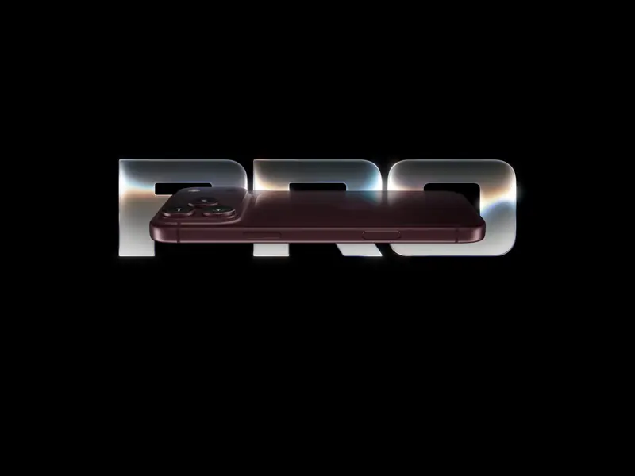

Дизайн Burgundy
Приглушений бордовий колір, плавні контури та візуальна ідея преміального смартфона.
Роздивитися дизайн →IPHONE 18 PRO · BURGUNDY-КОНЦЕПТ
Познайомся з головним героєм iPhone Select: роздивись Burgundy-дизайн, обертай 3D-макет і відкрий його схематичну внутрішню будову.
ГОЛОВНИЙ ГЕРОЙ IPHONE SELECT
У цій авторській візуалізації головне — насичений Burgundy, стриманий силует і увага до деталей. Зображення та 3D-макет показують концепцію проєкту, а не підтверджену специфікацію Apple.

Інтерактивна модель дозволяє перейти від цілісного корпусу до розібраної конструкції та повернути всі деталі на місце.
Відкрити інтерактивний iPhone 18 ProСхематична конструкція. Не інструкція з ремонту.
МОЖЛИВОСТІ
Головна історія сайту — iPhone 18 Pro. Почни із зовнішнього вигляду й перейди до інтерактивного огляду.
Приглушений бордовий колір, плавні контури та візуальна ідея преміального смартфона.
Роздивитися дизайн →Поверни макет, наблизь деталі та подивись на телефон із будь-якого боку.
Відкрити 360° →Розбери й знову збери схематичну модель, щоб розглянути окремі компоненти.
Дослідити компоненти →iPhone 18 Pro — центр цього проєкту. Якщо шукаєш модель попередніх поколінь, у каталозі окремо зібрано iPhone 14–16: порівняй характеристики, обери пам’ять і додай модель у навчальний кошик.